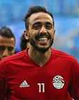
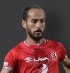
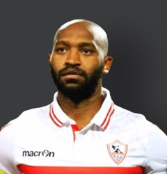
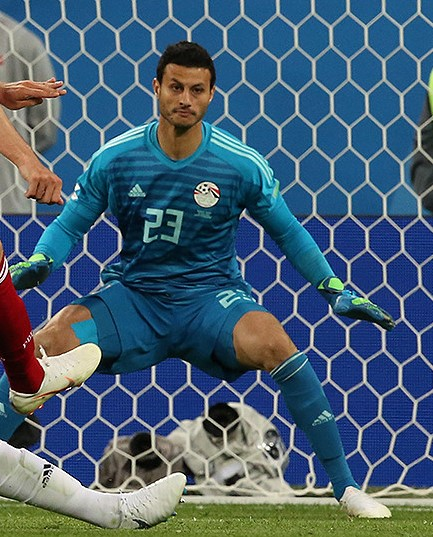
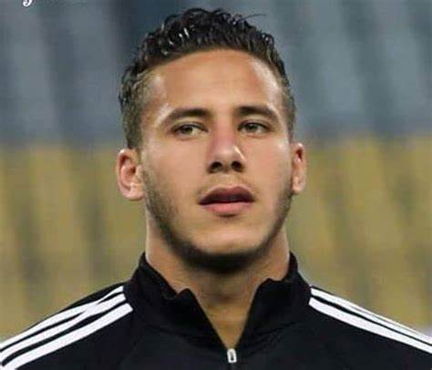
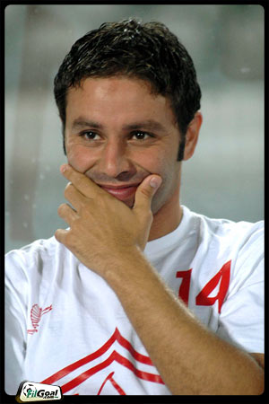

-  Mahmoud Kahraba
Mahmoud Abdel Moneim Abdel Hamid Soliman (Arabic: محمود عبد المنعم عبد الحميد سليمان; born 13 April 1994), commonly known as Mahmoud Kahraba or simply Kahraba, is an Egyptian professional footballer who plays for Al Ahly and Egypt national team. After beginning his career as a youth player with Al Ahly, he made his professional debut in the Egyptian Premier League with ENPPI in 2011. He joined Swiss Super League side FC Luzern on a season-long loan deal in 2013 but left the club in March 2014 after his contract was terminated with Luzern citing inappropriate behaviour. He returned to Switzerland the following season for a six-month loan spell with Grasshopper. After returning to Egypt, he joined Zamalek where he helped the club to win the Egypt Cup in his first season. He joined Saudi Professional League side Al-Ittihad on loan for two seasons, winning the Saudi Crown Prince Cup and the Kings Cup. Having represented Egypt at several youth levels, including winning the 2013 Africa U-20 Cup of Nations with the under-20 side, he made his senior international debut in 2013. He was included in Egypt's squads for the 2017 Africa Cup of Nations and the 2018 FIFA World Cup.
-  Walid Soliman
Walid Soliman Said Obaid (Arabic: وليد سليمان سعيد عبيد; born 1 December 1984) is an Egyptian professional footballer who plays as a winger and an Attacking Midfielder for Egyptian club Al Ahly and the Egypt national team. Soliman, who was born in Minya, played for his home town youth team; Beni Mazar Sports Centre. In 2004, he moved to Haras El-Hodoud and played for its U-20 youth team. However, he managed to appear for the club's first team in few matches under the coaching of Helmi Tolan. He was also among the Haras El-Hodoud squad that finished third in the 2004-05 Egyptian Premier League.
-  Shikabala
Mahmoud Abdelrazek Hassan Fadlala (Arabic: محمود عبد الرازق حسن فضل الله born 5 March 1986), commonly known as Shikabala (Arabic: شيكابالا IPA: [ʃikæˈbæːlæ]), is an Egyptian professional footballer who plays for Egyptian Premier League club Zamalek and the Egypt national team. Growing through the youth ranks of Zamalek, he served the Egyptian club for many years and is considered to be one of the legends of the club. He previously had stints with PAOK and Sporting CP. He predominantly plays as a right-winger but can play as a central attacking midfielder and as a left winger.
-  El Shenawy
Mohamed El Sayed Mohamed El Shenawy (Egyptian Arabic: محمد السيد محمد الشناوي; born 18 December 1988) is an Egyptian professional footballer who plays for Al Ahly and the Egyptian national football team as a goalkeeper. He began his career as a youth player with Al Ahly but was released in 2009, joining Tala'ea El Gaish. He spent time on loan with Haras El Hodoud before joining Petrojet in 2013. He returned to Al Ahly in July 2016 and, having displaced Sherif Ekramy, he helped the club to win consecutive Egyptian Premier League titles in 2017 and 2018 and also the Egypt Cup and the Egyptian Super Cup. He made his international debut for Egypt in March 2018 in a friendly match and was selected as the starting goalkeeper for their squad at the 2018 FIFA World Cup, playing in their opening two matches.
-  Ramadan Sobhi
Ramadan Sobhi Ahmed (Arabic: رمضان صبحي أحمد; born 23 January 1997) is an Egyptian professional footballer who plays as a winger for Pyramids FC and the Egypt national team. Sobhi began his career with leading Egyptian club Ahly SC of Cairo, making his professional debut in February 2014. He established himself in the first team at the Cairo International Stadium and helped Al Ahly to win the Egyptian Premier League title in the 2013–14 and 2015–16 campaigns. His performances attracted the attentions of European clubs and in July 2016 he joined English side Stoke City for a fee of £5 million. He spent two seasons with Stoke before joining Huddersfield Town in June 2018. He failed to establish himself at Huddersfield and he returned on loan to Al Ahly in January 2019.
-  Hazem Emam
Hazem Emam (Arabic: حازم إمام; born 10 May 1975) is an Egyptian retired professional footballer who played as an attacking midfielder.Hazem was born in Mohandessin, Egypt. He is the son of the Zamalek legend, Hamada Emam; and the grandson of another Zamalek legend, Yehia Emam.he played for zamalek